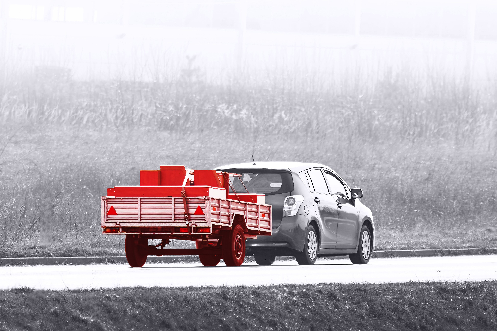

Reviewers ask for more automatic document validation. Start with the highest-volume official files, then split them into automated, assisted, and manual lanes.
Prepared for CTAIMA
Scale Documenta delivery without locking in fixed payroll
Saw CTAIMA hiring a Documenta Team Lead in Tarragona, plus Conversation Designer and Systems Engineer roles. That points to more product work across CAE, Twind, AI, and access control.
Our read
CTAIMA is adding product leadership while Hg backs the e-coordina combination. That means the hard part is not only hiring more engineers. It is keeping document validation, access control, and reporting moving together. CTAIMACAE already promises automatic review of official documents and real-time access visibility. Twind now adds AI and global contractor workflows. If delivery slows, customer value can split across web, mobile, APIs, and support teams.
Where we'd start
Users praise the browser flow, but ask for stronger app coverage. Map gate, contractor, and admin tasks before adding more screens.
What we'd do
We would place one dedicated squad under CTAIMA's product lead for a six-week pilot, with weekly demos and shared Jira rituals.
1 Tech Lead
2 full-stack engineers
1 QA automation engineer
1 UX/product designer
Optional AI engineer
1
Audit the live flow
Trace document upload, validation, expiry, and access decisions across CTAIMACAE, Twind, and the API surface.
2
Ship one automation slice
Pick one official document family and add review helpers, error states, trace logs, and QA coverage.
3
Stabilize mobile access
Align web and app release paths for gate checks, work permits, contractor status, and field feedback.
4
Leave a repeatable base
Hand over tests, release notes, and backlog choices for the next Documenta squad to extend.
React
Angular
.NET
Java
Node.js
Playwright
Who is Elinext
Elinext is a full-cycle software development company, active since 1997, with about 700 in-house specialists and no freelancers. We support web, mobile, QA, DevOps, AI, and product design work. For CTAIMA, the relevant part is dedicated teams under your product lead, plus ISO 9001 and ISO 27001 delivery habits. We have served clients such as Siemens, Broadcom, Volkswagen, TRUMPF, and TUI. That mix fits a compliance platform where quality, data security, and steady releases matter. It also fits a model where CTAIMA keeps roadmap control.
Siemens
Broadcom
Volkswagen
TRUMPF
TUI
Proof

ESG Software Automation
Elinext digitized contract and application workflows, cutting review time and paper work for a manufacturing client.
Read case study
Warehouse Management Microservices
Elinext built web, mobile, and backend services for barcode flows, ERP links, and real-time operations.
Read case study